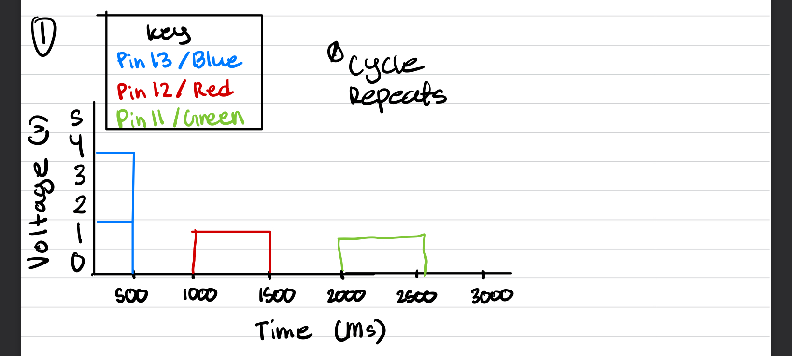

void setup() {
// set up pins 13, 12, and 11
pinMode(13, OUTPUT);
pinMode(12, OUTPUT);
pinMode(11, OUTPUT);
}
// the loop function runs over and over again forever
void loop() {
// variable to control the delay for blinking
int delay = 500;
// turn on pin 13 for 500ms
digitalWrite(13, HIGH);
delay(delay);
// turn off pin 13 for 500ms
digitalWrite(13, LOW);
delay(delay);
// turn on pin 12 for 500ms
digitalWrite(12, HIGH);
delay(delay);
// turn off pin 12 for 500ms
digitalWrite(12, LOW);
delay(delay);
// turn on pin 11 for 500ms
digitalWrite(11, HIGH);
delay(delay);
// turn off pin 11 for 500ms
digitalWrite(11, LOW);
delay(delay);
}
Additional Questions
1. 
2. There are 14 digital pins on the Arduino which means
we could connect 14 different LEDs to the Arduino.
Assuming we are using 5V and red LEDs (1.8 forward voltage) and resistance of 220 ohms
we can see that (5-1.8)/220 = 14.5mA. Multiply that by 14 and we get 203mA of current
4. Changing the delay to about 4 milliseconds made it so that
I was unable to tell if the LEDs were blinking or not.